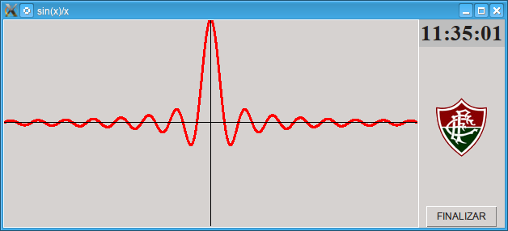
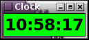

{kind=link}
{kind=link}
{kind=link}
{kind=link}
{kind=link}
{kind=link}
{kind=link}
{kind=link}
{kind=link}
{kind=link}
{kind=link}
{kind=link}
{kind=link}
{kind=link}
{kind=link}
{kind=link}
{kind=link}
{kind=link}
{kind=link}
{kind=link}
{kind=link}
{kind=link}

1a) Escreva uma classe para manipular objetos Fração (números racionais da forma n/d).
Nota: os operadores aritméticos não imprimem coisa alguma, mas apenas retornam objetos Fracao (que não são listas!!).
1b) Escreva uma classe Agenda para criar objetos do tipo livro de endereços.
Nota: tanto repr() como str() não imprimem coisa alguma, mas apenas retornam uma representação na forma de uma string.
Agenda(str):
Chris Evans: 2111-0000
Eva: 9087-1234
Tony Stark: 2274-4635 \ 9876-1234
1c) Escreva uma classe para criar objetos do tipo vetor 3D. Defina as operações pertinentes e sobrecarregue o operador de indexação.
1d) Inclua na agenda do exercício 1b, o endereço do contato.
Nota: tanto repr() como str() não imprimem coisa alguma, mas apenas retornam uma representação na forma de uma string.
Agenda(repr):
Chris Evans: Endereço: Ilha do Governador, Tel: 2111-0000
Eva: Endereço: UFRJ, Tel: 9087-1234 | 2267-6767
Steve Rogers: Endereço: CCMN, Tel: 3568-8799
Tony Stark: Endereço: Leblon, Tel: 2274-4635 | 9876-1234
1e) Escreva um programa para ler uma série de frações de um arquivo e imprimir a sua soma e produto.
Arquivo de Entrada:
2 3
5 7
1 4
8 3
2 4
1 7
3 8
Saída do programa:
Fracao 0: 2/3
Fracao 1: 5/7
Fracao 2: 1/4
Fracao 3: 8/3
Fracao 4: 1/2
Fracao 5: 1/7
Fracao 6: 3/8
Soma: 893/168
Produto: 5/588
Por exemplo:
roma: ~/skeleton$ _01b_AgendaTest.py
..........
----------------------------------------------------------------------
Ran 10 tests in 0.001s
OK
2a) Resolva o sistema linear abaixo.
2b) Transponha, inverta e encontre a diagonal principal da matriz do sistema:
x + 2y + 3z = 1
11x + 12y + 13z = 2
21x + 22y + 23z = 3
2c) Encontre as raízes, integre, eleve ao quadrado e derive, simbolicamente, o seguinte polinômio:
p(x) = 3x2 + 4x + 5
2d) Avalie o polinômio nos pontos x = 4 e x = 5.
3) Faça um programa usando a matplotlib para desenhar a função f(x) = e-x * cos(2πx):
e-x * cos(2πx) |
4a) Faça um programa usando a matplotlib para desenhar o diagrama de barras apresentado abaixo:
Diagrama de barras |
4b) Escreva um programa que leia um arquivo texto e diga quantas linhas, letras, bytes, frases, sentenças e palavras existem no texto. Assuma que sentenças são terminadas pelos caracteres '.', '?' ou '!'.
4c) Inclua no programa anterior, uma lista de parágrafos (strings). Ao final, ordene esta lista e imprima os parágrafos em ordem lexicográfica.
Arquivo: "Gettysburg Address.txt"
--------------------------------------------------
Lines : 23
Characters : 1496
Bytes : 1496
Blank lines: 2
Sentences : 10
Words : 276
Paragraphs : 3
--------------------------------------------------
5) Implemente uma interface gráfica para converter uma representação de números decimais para romanos e vice-versa.
Obs: a interface deve aceitar valores até 4.000.000 e tratar os principais tipos de erro, como: valores não numéricos ou muito grandes.
Dicas:
- Use os módulos _03a_roman2int.py e _03c_int2roman.py de Python 1
- Adicione uma imagem à sua interface na forma de um label.
global soldier # segura a imagem na memória
soldier = PhotoImage(file='Roman_Soldier.gif')
soldier = soldier.subsample(4, 4) # reduza a imagem por um fator 4
label = Label(master,image=soldier)
5b) Faça um programa para executar o dns reverso de um dado IP.
Dicas:
>>> import dns.resolver
>>> import dns.reversename
>>> for a in dns.resolver.query(dns.reversename.from_address('81.200.68.204'), 'PTR'):
... print a
...
www.nominum.com.
DNS Reverso |
5c) Faça um programa para desenhar a função sinc(x) = sin(x)⁄x , usando o componente Canvas do Tkinter.
Dicas: por L'Hôpital:
lim sin(x)⁄x = 1.
x → 0
Use um canvas [2vx × 2vy] = [512 ×
256]: c = Canvas(top, width=2*vx, height=2*vy); c.pack(expand=True,
fill="both")
def resize(e):
canvas.delete(ALL) # apaga todos os elementos do canvas
vx = canvas.winfo_width() // 2
vy = canvas.winfo_heigh() // 2
..... # redesenha o gráfico com os novos tamanhos da janela
....
canvas = Canvas(top, width=vx*2, height=vy*2)
canvas.pack(side='left', expand=YES, fill=BOTH)
canvas.bind("⟨Configure⟩", resize)

sinc(x) com 15 cristas para cada lado |
5d) Implemente uma interface gráfica para verificar se um dado número é primo.
Dicas:- Use os módulos _04a_prime.py e _04b_intsqrt.py de Python 1
- Adicione uma imagem à sua interface na forma de um label.
global soldier # segura a imagem na memória
soldier = PhotoImage(file='Optimus.gif')
soldier = soldier.subsample(8, 8) # reduza a imagem por um fator 8
label = Label(master,image=soldier)
5e) Implemente uma interface gráfica para converter números decimais reais para o formato binário em ponto flutuante utilizado pelas CPUs modernas - IEEE 754 (32 bits).
1 0 0 1 1 um número binário inteiro
2⁴ 2³ 2² 2¹ 2⁰ valores posicionais
(1 * 2⁴) + (0 * 2³) + (0 * 2²) + (1 * 2¹) + (1 * 2⁰)
= 16 + 0 + 0 + 2 + 1
= 19
-1 0 0 1. 0 0 1 um número binário fracionário
-(1 * 2³) + (0 * 2²) + (0 * 2¹) + (1 * 2⁰) + (0 * 2⁻¹) + (0 * 2⁻²) + (1 * 2⁻³) valores posicionais
= -8 + 0 + 0 + 1 + 0 + 0 + 0.125
= -9.125
- Nem todo número decimal pode ser expresso exatamente como um
número em ponto flutuante.
- Isto pode ser visto considerando-se o número "0.1" e
examinando-se a sua representação binária,
que pode ser tanto ligeiramente menor ou maior, dependendo do
último bit.
Dicas:
- A implementação não deve mover nunca um número em ponto flutuante para um inteiro, porque haverá perda de precisão.
O menor real de 32 bits representável no formato IEEE 754. |
6) Faça um programa para testar o estado de um grupo de computadores, dados por um intervalo de IPs.
Dicas:
Pingador |
7) Crie uma interface Tk para implementar um alarme que permita:
a música selecionada deve poder ser tocada e parada a qualquer instante, pelas opções "Play" e "Stop".
Dicas:
8a) Escreva uma classe que implemente um relógio digital. A classe possui três métodos a saber:

Relógio Digital e Cronógrafo |
from tkinter import *
from threading import Thread
import time
class digitalClock:
#
# Constructor.
#
# @param clock a label to display the time.
# @param secs number of seconds for time regressive counting.
# @param time string for initializing the time. Just leave the default.
#
#
def __init__(self, clock, secs=0, time=''):
...
#
# Updates the clock display.
#
def tick(self):
...
...
# calls itself every 1000 milliseconds
# to update the time display as needed
self.clock.after(1000, self.tick)
#
# Starts a count down from the number of seconds set to zero.
#
def tickDown(self):
...
## Creates a new thread.
class makeThread (Thread):
## Constructor.
#
# @param func function to be executed in this thread.
#
def __init__(self, func):
Thread.__init__(self)
self.__action = func
self.debug = False
## Obejct destructor.
# In Python, destructors are needed much less, because Python has
# a garbage collector that handles memory management.
# However, there are other resources to be dealt with, such as:
# sockets and database connections to be closed,
# files, buffers and caches to be flushed.
#
def __del__(self):
if (self.debug):
print ("Thread end")
## Method representing the thread's activity.
# This method may be overriden in a subclass.
#
def run(self):
if (self.debug):
print ("Thread begin")
self.__action()
Dicas:
root = Tk()
aLabel = Label(root, font=('times 28', 20, 'bold'), bg='green')
aLabel.pack(fill=BOTH, expand=1)
d = digitalClock(aLabel)
t = makeThread(d.tick)
t.start()
mainloop()
8b) Escreva um programa usando o componente Canvas do TkInter, para desenhar um relógio, cujos ponteiros podem ser quatro tipos de curvas.
Obs: clicando-se o botão esquerdo do mouse sobre o
relógio deve permitir alterar a forma dos ponteiros e o botão do
meio, a largura.
Isto requer o uso de uma thread separada para atualizar o
relógio.
Dicas:
8c) Escreva uma classe para desenhar um relógio analógico.
## Movimenta o relógio, redesenhando os ponteiros/dígitos após um certo intervalo de de tempo.
#
def poll():
global root
delta = -3
t = datetime.timetuple(datetime.utcnow()+timedelta(hours = delta))[3:6]
print("{:02d}:{:02d}:{:02d}".format(*t,’02’),end=’\r’)
root.after(200, poll)
9) Implemente, graficamente, o jogo das Torres de Hanoi, utilizando ovais do componente canvas para representar os discos.
Obs: forneça opções para executar a animação passo a passo e para selecionar o número de discos.
Dica: para a animação passo a passo funcionar, o cursor do mouse deve estar fora da janela da interface.
Torres de Hanoi. |
10) Implemente um "frontend" (interface gráfica), suportando skins, para o mpg123.
Obs: skins são imagens mapeadas sobre um Canvas, para dar uma aparência sofisticada ao player.
Dicas:
- O player deve guardar as músicas selecionadas em uma Listbox, de modo a oferecer a funcionalidade de "playlists".
- Utilize uma skin composta por quatro imagens:
(code,user) = getstatusoutput('whoami') # executa o comando "whoami" do linux
- Processe a playlist com o comando:
mpg123 -@ /tmp/tkmpg123-user.m3u
- Permita a inclusão de URLs na playlist (no menu "File"), abrindo uma janela de diálogo.
- Adicione uma opção para limpar a playlist, no menu "Edit".
- Utilize teclas de atalho para as principais opções.
11) Implemente um "frontend" (interface gráfica) para controlar rádios FM.
Obs:
- O direcionamento da fonte de captura da placa de som de volta
como áudio PCM, é conhecido como loopback.
- Não costuma mais estar disponível por hardware em algumas
placas onboard.
Dicas:
- Utilize o fmtools, para controlar o rádio FM da placa de captura.
- Há três comandos básicos: fm on, fm off, fm freq (liga, desliga e sintoniza na frequência dada).
- Controle o volume pelo comando do
alsa-utils:
amixer -q -c 0 set PCM vol%,
ou, em windows, do
NirSoft:
nircmd.exe setsysvolume 65535*vol/100 # vol está no intervalo [0,100].
- As estações devem ser lidas de um arquivo chamado .radiostations, na raiz do diretório do usuário.
- Este arquivo contém pares de nome de estação e sua frequência, um par por linha, e opcionalmente a URL da estação na web.
- Aceite comandos via controle remoto, usando para isto o python-lirc.
- Implemente o loopback com os seguintes comandos do pulseaudio-utils:
parec | paplay
- Utilize o oggenc do vorbis-tools, para gravar a programação da estação corrente no formato ogg:
parec -D default -d 0 -f cd - | oggenc - -Q -o "nome_do_arquivo.ogg"
- Utilize o notify-python, para exibir mensagens para o usuário, por exemplo, o arquivo de gravação.
- Utilize o Tix, uma extensão do Tk, para implementar dicas de uso, na forma de Balloon Help, para os componentes (widgets) do tkradio.
- Se não houver uma placa de captura disponível, utilize o
mplayer ou o gstreamer para reproduzir a stream da rádio,
haja vista que quase todas estão disponíveis
online.
# escolha um dos players abaixo, adequado ao seu ambiente de desenvolvimento:
PLAYER = "/usr/bin/vlc" # Linux
PLAYER = "/usr/bin/mplayer" # Linux
PLAYER = "/usr/bin/gst-launch-1.0" # Linux
PLAYER = "/Applications/VLC.app/Contents/MacOS/VLC" # MacOS
PLAYER = "/opt/local/bin/mplayer" # MacOs
PLAYER = "/opt/local/bin/gst-launch-1.0" # MacOs
PLAYER = "C:\\Arquiv~1\\SMPlayer\\mplayer\\mplayer.exe" # Windows
# vlc
param = ["vlc", "-Idummy", "http://playerservices.streamtheworld.com/api/livestream-redirect/SULAMERICA"]
# mplayer
param = ["mplayer", "-quiet", "http://playerservices.streamtheworld.com/api/livestream-redirect/SULAMERICA"]
# gstreamer
param = ["gst-launch-1.0", "playbin", "uri=http://playerservices.streamtheworld.com/api/livestream-redirect/SULAMERICA"]
mpid = os.spawnv ( os.P_NOWAIT, PLAYER, param )
11b) Com poucas modificações, pode-se controlar uma TV utilizando o código da interface do rádio:
Dica: utilize o mplayer para a captura de vídeo, o xawtv para mudar os canais e o mencoder para gravar a programação.
12) Usando o componente Canvas do tkInter, escreva um programa que desenhe, e permita rodar com o mouse, um tetraedro.
Dicas:
vértices 0 1 2 3
| 0 -100 100 0 |
tet = | -100 100 100 0 |
| 0 0 0 200 |
Matrizes de rotação ao redor dos eixos x, y e z:
| 1 0 0 |
Rx(α) = | 0 cos(α) -sin(α) |
| 0 sin(α) cos(α) |
| cos(β) 0 sin(β) |
Ry(β) = | 0 1 0 |
|-sin(β) 0 cos(β) |
| cos(γ) -sin(γ) 0 |
Rz(γ) = | sin(γ) cos(γ) 0 |
| 0 0 1 |
def cbMottion(event):
"""Map mouse displacements in Y direction to rotations about X axis,
and mouse displacements in X direction to rotations about Y axis."""
global tet
dx = -(event.y - lastY)
dy = (event.x - lastX)
tet = matMul(ROT_X(EPS(dx)), tet) # EPS is a function of dx, such as dx*π/(0.75*height)
tet = matMul(ROT_Y(EPS(dy)), tet)
drawTet(tet,tetColor)
lastX = event.x
lastY = event.y
# windows: event.delta > 0 -> scroll up
canvas.bind_all('<MouseWheel>', wheel)
# X11 (linux)
canvas.bind('<Button-4>', wheelUp)
canvas.bind('<Button-5>', wheelDown)
def drawTet(tet,col):
canvas.delete(ALL)
...
def resize(event):
drawTet(tet, 'black')
canvas.bind('<Configure>', resize)
13) Usando o PyOpenGL, escreva um programa que desenhe um cubo e
um tetredro, que fiquem girando na tela.
As faces do cubo devem ter cores diferentes e as faces do
tetraedro devem ser coloridas a partir da interpolação das cores
dos seus vértices: vermelho, verde e azul.
Spinning Cube |
14) Usando o cgal-python e o PyOpenGL, escreva um programa que
desenhe o Diagrama de Voronoi,
e a triangulação de Delaunay, a partir de pontos fornecidos com
o mouse.
Voronoi |
15) Usando o PyOpenGL, escreva um programa para desenhar fractais conhecidas como conjuntos de Julia.
16) Desenhe uma fractal conhecida como Sierpinski Gasket. A maneira mais fácil é ir dividindo ao meio, recursivamente, as arestas de um triângulo inicial. Use uma escala para variar o número de subdivisões n, gradativamente, e dois labels, para indicar o número de triângulos vermelhos (3 n ) e brancos (3 n -1)/2.
17) O programa
mplayertv.py foi implementado
segundo o paradigma "procedural" de programação.
Altere-o usando OO (orientação a objetos), criando uma classe
mplayerTV.
18) Desafio Linux: escreva um programa python para "tocar" qualquer arquivo multimedia a partir de qualquer unidade de CD/DVD do computador.
Dicas:
- O programa mplayertv.py é capaz de "tocar" quase todos os tipos de arquivos multimedia.
- Arquivos em CD ("iso9660") ou DVD ("udf") , em linux, normalmente, são montados no diretório "/media/volume do CD" ou "/run/media/user/volume do CD".
- A informação de todos os pontos de montagem em uso está armazenada no arquivo "/etc/mtab".
- Use o módulo getcdmp.py, para descobrir qual o leitor de CD/DVD, o ponto de montagem e o sistema de arquivos.
Exemplo:
[cascavel:~/bin] getcdmp.py
('/dev/sr1', '/media/BLADE_RUNNER_16X9', 'udf')
[cascavel:~] mplayerdvd.py
Python Version: 2.5.4 - Language = en_US, Charcode = UTF8
Device = /dev/sr1 , Chapter = None , Mount Point = /media/BLADE_RUNNER_16X9 , File system = udf
The Monitor Aspect Ratio is None
[cascavel:~] libdvdread: Using libdvdcss version 1.2.10 for DVD access

Blade Runner |
/Paulo Roma.
{kind=link}
{kind=link}
{kind=link}
{kind=link}
{kind=link}
{kind=link}
{kind=link}
{kind=link}
{kind=link}
{kind=link}
{kind=link}
{kind=link}
{kind=link}
{kind=link}
{kind=link}